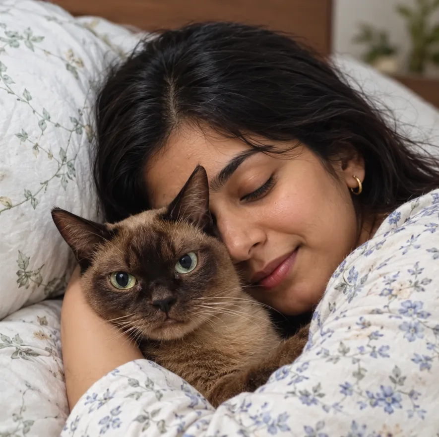
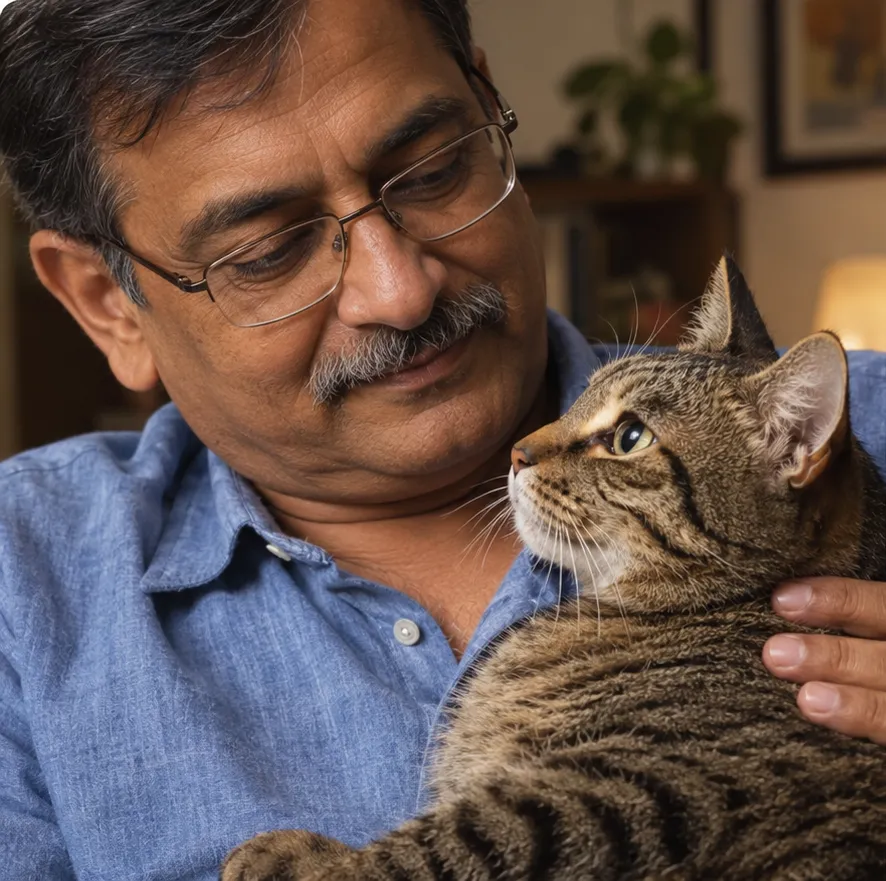
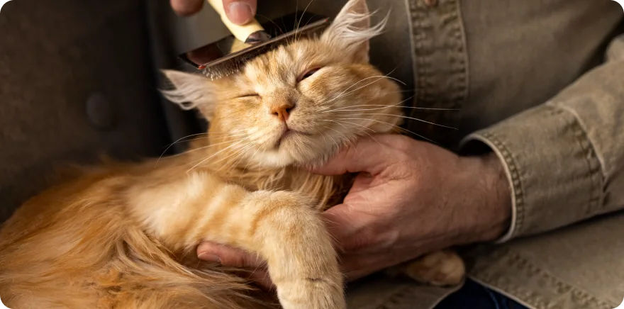
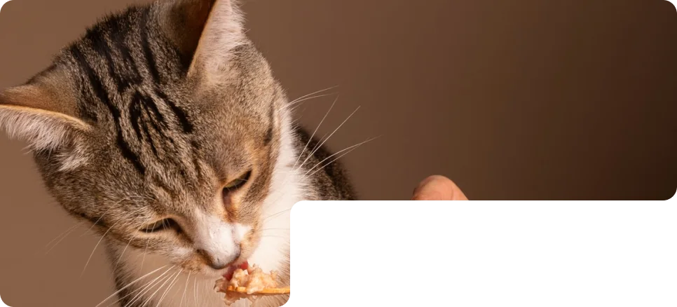
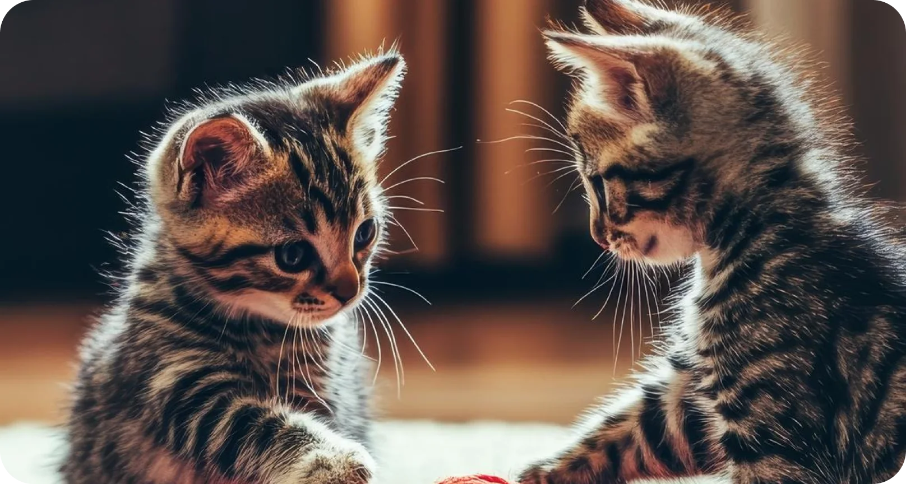

Loose or soft stools
What to feed, what to avoid, and what to watch for over the next days.
Check if your cat really needs a clinic visit, right from your couch. No carrier, no travel, no waiting room.

rating from cat parents across India.
from payment to your call with a feline vet.
if you are not happy with your call. Message us on WhatsApp within 48 hours.
What cat parents say

★★★★★My cat had an upset stomach, and I wasn't sure what to do. Being able to speak to a vet from home made the whole process feel less overwhelming.
As a first-time cat parent, I have a hundred questions! It's nice to have somewhere to turn for quick guidance.
Being able to start with an online vet consultation from home is a really convenient option when I have concerns about Luna.
How it works
Name, age and your phone number. It takes about a minute.
Pay with UPI. You receive a call from a feline vet, usually within 15 to 30 minutes.
The vet talks you through next steps. A written plan follows on WhatsApp.
Our guarantee
Pay ₹99 and speak to a feline vet. If the call did not help, message us on WhatsApp within 48 hours and we will refund your ₹99.
Speak to a vet for only Rs. 99What you get
Everyday tummy concerns that a feline vet can guide you on by phone.
What to feed, what to avoid, and what to watch for over the next days.
Diet, water and routine changes that help things move.

Whether it is likely mild, and how to manage grooming and feeding.

Eating less but still eating, gas, or an upset after a food change.
Repeated vomiting, blood, not eating for a day or more, a weak or very sleepy cat, a swollen belly, or something swallowed. If you see these, go to a clinic now.
A clear routine you can follow at home, sent to you in writing on WhatsApp after the call.
Speak to a vet for only Rs. 99Why act early
A call removes the carrier, the car ride and the cost of a first visit, so small tummy problems get looked at sooner.

Source: Supertails research of 400 Indian pet parents, reported by GlobalPETS, December 2023.
Felica vs a clinic visit
Who you will speak to
Feline Internal Medicine
20 years of experience
Feline Internal Medicine
8 years of experience
The two things parents ask most: yes, every call is with a registered feline vet, and if you are not happy you get your money back.
Speak to a vet for only Rs. 99Yes. Every call is with a registered feline vet. Their experience and registration details are on this page.
Online advice is generic. A vet asks about your cat's age, food and history, and tells you what applies to your cat, including when it is time to see a clinic.
If your cat has warning signs, go to a clinic. For milder tummy trouble, a call can save you a stressful trip, and a typical clinic visit starts at ₹499. If the vet thinks your cat needs an exam, they will say so.
Message us on WhatsApp within 48 hours and we will refund your ₹99. One refund per booking.
Go to a clinic now. This service is for everyday tummy concerns and is not for emergencies. Check the warning signs above if you are unsure.
Your cat's age, what they eat, when the problem started, and how often it happens. A photo or a short note helps but is optional.
Our vets will try to call you up to three times over a short period. Please keep your phone nearby after booking, and if you miss the first call, we will try again.
Payments are processed by Razorpay over UPI. We never see or store your payment details.
No. Just your phone number. You receive a call from the vet and the care plan arrives on WhatsApp.
Yes, for everyday tummy concerns. Very young kittens and older cats can get unwell quickly, so if you are worried, go to a clinic.
Not happy with your call? Message us within 48 hours and we will refund your ₹99.